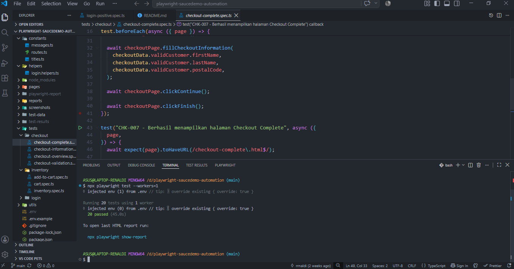

QA Testing — Manual & Automation
Kumpulan proyek pengujian software, mencakup manual testing (Bootcamp QA Manual) dan automation testing menggunakan Playwright pada website SauceDemo.
Manual Testing
Test Case Documentation
Lihat dokumentasi test case dan hasil pengujian secara lengkap.
Screenshot Hasil Pengujian

Dokumentasi test case yang dibuat untuk menguji fitur pada aplikasi, mencakup test scenario, test step, test data, expected result, actual result, dan hasil pengujian.
Automation Testing — Playwright (SauceDemo)
Proyek pembelajaran automation testing menggunakan Playwright untuk menguji fungsionalitas website SauceDemo, mencakup skenario login, penambahan ke keranjang, hingga proses checkout.
Source Code
Lihat kode automation script secara lengkap di GitHub.
Screenshot Hasil Pengujian
